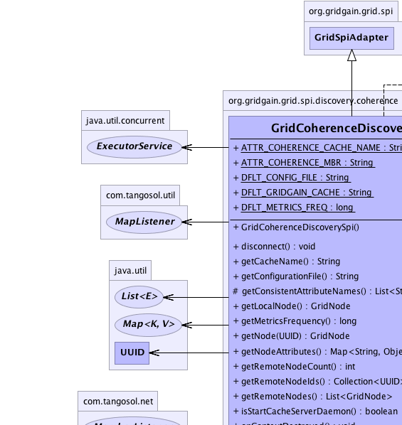
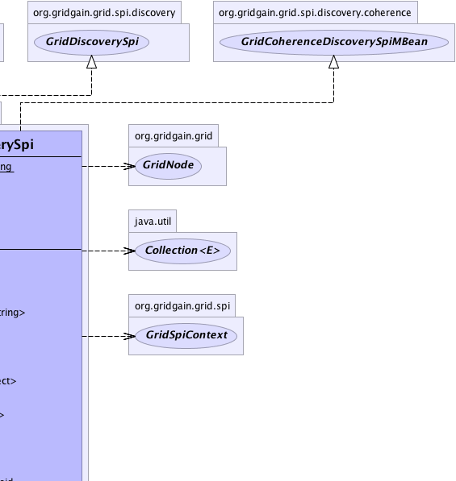
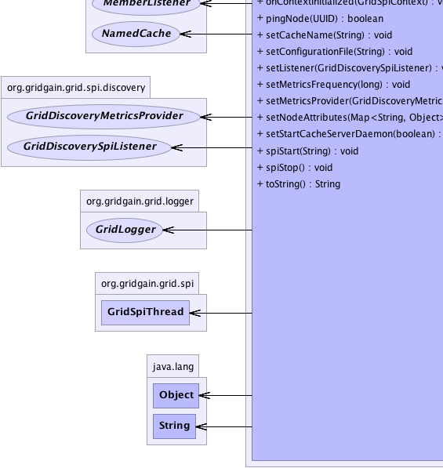
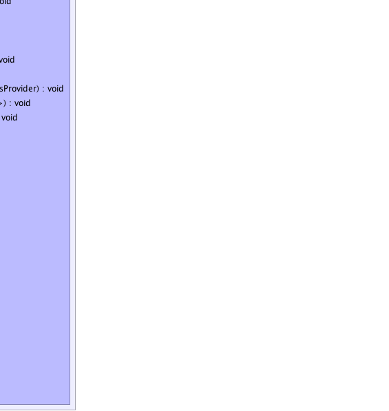

org.gridgain.grid.spi.GridSpiAdapter
org.gridgain.grid.spi.discovery.coherence.GridCoherenceDiscoverySpi
org.gridgain.grid.spi.GridSpiAdapter
org.gridgain.grid.spi.discovery.coherence.GridCoherenceDiscoverySpi
|
GridGain™ 3.1.0c
Community Edition |
|||||||||
| PREV CLASS NEXT CLASS | FRAMES NO FRAMES | |||||||||
| SUMMARY: NESTED | FIELD | CONSTR | METHOD | DETAIL: FIELD | CONSTR | METHOD | |||||||||
java.lang.Object
@GridSpiInfo(author="GridGain Systems, Inc.",
url="www.gridgain.com",
email="support@gridgain.com",
version="3.1.0c.31052011")
@GridSpiMultipleInstancesSupport(value=false)
public class GridCoherenceDiscoverySpi
Oracle Coherence implementation of GridDiscoverySpi SPI. It uses Coherence
cluster capabilities discover remote nodes in grid. SPI works with Coherence distributed cache
named GridCoherenceDiscoverySpi.DFLT_GRIDGAIN_CACHE and every node in the cluster works with that cache
to communicate with other remote nodes.
All grid nodes have information about Coherence cluster members they are associated with in
attribute by name GridCoherenceDiscoverySpi.ATTR_COHERENCE_MBR. Use
GridNode.getAttribute(ATTR_COHERENCE_MBR) to get a handle
on GridCoherenceMember class.
GridCoherenceDiscoverySpi.setCacheName(String)).GridCoherenceDiscoverySpi.setMetricsFrequency(long).GridCoherenceDiscoverySpi spi = new GridCoherenceDiscoverySpi(); GridConfigurationAdapter cfg = new GridConfigurationAdapter(); // Override default discovery SPI. cfg.setDiscoverySpi(spi); // Starts grid. G.start(cfg);
<bean id="grid.custom.cfg" class="org.gridgain.grid.GridConfigurationAdapter" singleton="true">
...
<property name="discoverySpi">
<bean class="org.gridgain.grid.spi.discovery.coherence.GridCoherenceDiscoverySpi"/>
</property>
...
</bean>
Note: Coherence is not shipped with GridGain. If you don't have Coherence, you need to
download it separately. See http://www.oracle.com/tangosol/index.html for
more information. Once installed, Coherence should be available on the classpath for
GridGain. If you use ${GRIDGAIN_HOME}/bin/ggstart.{sh|bat} script to start
a grid node you can simply add Coherence JARs to ${GRIDGAIN_HOME}/bin/setenv.{sh|bat}
scripts that's used to set up class path for the main scripts.
Note: When using Coherence SPIs (communication or discovery) you cannot start
multiple GridGain instances in the same VM due to limitations of Coherence. GridGain runtime
will detect this situation and prevent GridGain from starting in such case.
See GridSpiMultipleInstancesSupport for details.

For information about Spring framework visit www.springframework.org
| Wiki | |
| Forum |
GridDiscoverySpi
|  |  |
|  |  |
| Field Summary | |
|---|---|
static String |
ATTR_COHERENCE_CACHE_NAME
Name of Coherence cache used by SPI (value is disco.coherence.cache). |
static String |
ATTR_COHERENCE_MBR
Name of cluster GridCoherenceMember attribute added to local node attributes
at startup (value is disco.coherence.member). |
static String |
DFLT_CONFIG_FILE
Default Coherence configuration path relative to GridGain installation home folder (value is config/coherence/coherence.xml). |
static String |
DFLT_GRIDGAIN_CACHE
Default Coherence cache name (value is gridgain.discovery.cache). |
static long |
DFLT_METRICS_FREQ
Default metrics heartbeat delay (value is 3000). |
| Constructor Summary | |
|---|---|
GridCoherenceDiscoverySpi()
|
|
| Method Summary | |
|---|---|
String |
getCacheName()
Gets Coherence cache name. |
String |
getConfigurationFile()
Gets either absolute or relative to GridGain installation home folder path to Coherence XML configuration file. |
protected List<String> |
getConsistentAttributeNames()
Returns back a list of attributes that should be consistent for this SPI. |
GridNode |
getLocalNode()
Gets local node. |
long |
getMetricsFrequency()
Gets delay between metrics requests. |
GridNode |
getNode(UUID nodeId)
Gets node by ID. |
Map<String,Object> |
getNodeAttributes()
This method is called before SPI starts (before method GridSpi.spiStart(String)
is called). |
int |
getRemoteNodeCount()
Gets number of remote nodes. |
Collection<UUID> |
getRemoteNodeIds()
Gets set of discovered remote nodes IDs. |
List<GridNode> |
getRemoteNodes()
Gets collection of remote nodes in grid or empty collection if no remote nodes found. |
boolean |
isStartCacheServerDaemon()
Gets flag to start Coherence cache server DefaultCacheServer
on a dedicated daemon thread or not. |
void |
onContextDestroyed()
Callback invoked prior to stopping grid before SPI context is destroyed. |
void |
onContextInitialized(GridSpiContext spiCtx)
Callback invoked when SPI context is initialized. |
boolean |
pingNode(UUID nodeId)
Pings the remote node to see if it's alive. |
void |
setCacheName(String cacheName)
Sets name for Coherence cache used in grid. |
void |
setConfigurationFile(String cfgFile)
Sets either absolute or relative to GridGain installation home folder path to Coherence XML configuration file. |
void |
setListener(GridDiscoverySpiListener lsnr)
Sets a listener for discovery events. |
void |
setMetricsFrequency(long metricsFreq)
Sets delay between metrics requests. |
void |
setMetricsProvider(GridDiscoveryMetricsProvider metricsProvider)
Sets discovery metrics provider. |
void |
setNodeAttributes(Map<String,Object> attrs)
Sets node attributes which will be distributed in grid during join process. |
void |
setStartCacheServerDaemon(boolean startCacheServerDaemon)
Sets flag to start Coherence cache server on a dedicated daemon thread. |
void |
spiStart(String gridName)
This method is called to start SPI. |
void |
spiStop()
This method is called to stop SPI. |
String |
toString()
|
| Methods inherited from class org.gridgain.grid.spi.GridSpiAdapter |
|---|
assertParameter, configInfo, createSpiAttributeName, getAuthor, getGridGainHome, getLocalNodeId, getName, getSpiContext, getStartTimestamp, getStartTimestampFormatted, getUpTime, getUpTimeFormatted, getVendorEmail, getVendorUrl, getVersion, injectables, registerMBean, setJson, setName, startInfo, startStopwatch, stopInfo, unregisterMBean |
| Methods inherited from class java.lang.Object |
|---|
clone, equals, finalize, getClass, hashCode, notify, notifyAll, wait, wait, wait |
| Methods inherited from interface org.gridgain.grid.spi.GridSpi |
|---|
getName |
| Methods inherited from interface org.gridgain.grid.spi.GridSpiJsonConfigurable |
|---|
setJson |
| Methods inherited from interface org.gridgain.grid.spi.GridSpiManagementMBean |
|---|
getAuthor, getGridGainHome, getLocalNodeId, getName, getStartTimestamp, getStartTimestampFormatted, getUpTime, getUpTimeFormatted, getVendorEmail, getVendorUrl, getVersion |
| Field Detail |
|---|
public static final String DFLT_CONFIG_FILE
config/coherence/coherence.xml).
public static final String DFLT_GRIDGAIN_CACHE
gridgain.discovery.cache).
public static final String ATTR_COHERENCE_MBR
GridCoherenceMember attribute added to local node attributes
at startup (value is disco.coherence.member).
public static final String ATTR_COHERENCE_CACHE_NAME
disco.coherence.cache).
public static final long DFLT_METRICS_FREQ
3000).
| Constructor Detail |
|---|
public GridCoherenceDiscoverySpi()
| Method Detail |
|---|
@GridSpiConfiguration(optional=true) public void setCacheName(String cacheName)
If not provided, default value is GridCoherenceDiscoverySpi.DFLT_GRIDGAIN_CACHE.
cacheName - Cache name.public String getCacheName()
getCacheName in interface GridCoherenceDiscoverySpiMBean@GridSpiConfiguration(optional=true) public void setMetricsFrequency(long metricsFreq)
If not provided the default value is GridCoherenceDiscoverySpi.DFLT_METRICS_FREQ.
metricsFreq - Time in milliseconds.public long getMetricsFrequency()
getMetricsFrequency in interface GridCoherenceDiscoverySpiMBean@GridSpiConfiguration(optional=true) public void setConfigurationFile(String cfgFile)
If not provided, default value is GridCoherenceDiscoverySpi.DFLT_CONFIG_FILE.
cfgFile - Path to Coherence configuration file.public String getConfigurationFile()
getConfigurationFile in interface GridCoherenceDiscoverySpiMBeanpublic boolean isStartCacheServerDaemon()
DefaultCacheServer
on a dedicated daemon thread or not.
isStartCacheServerDaemon in interface GridCoherenceDiscoverySpiMBean@GridSpiConfiguration(optional=true) public void setStartCacheServerDaemon(boolean startCacheServerDaemon)
DefaultCacheServer
to avoid reconnection problem between grid nodes.
If not provided, default value is false.
startCacheServerDaemon - Flag indicates whether
Coherence DefaultCacheServer should be started in SPI or not.public void setNodeAttributes(Map<String,Object> attrs)
setNodeAttributes in interface GridDiscoverySpiattrs - Map of node attributes.public List<GridNode> getRemoteNodes()
getRemoteNodes in interface GridDiscoverySpipublic GridNode getNode(UUID nodeId)
getNode in interface GridDiscoverySpinodeId - Node ID.
null if node is not found.public Collection<UUID> getRemoteNodeIds()
getRemoteNodeIds in interface GridCoherenceDiscoverySpiMBeanpublic int getRemoteNodeCount()
getRemoteNodeCount in interface GridCoherenceDiscoverySpiMBeanpublic GridNode getLocalNode()
getLocalNode in interface GridDiscoverySpipublic void setListener(GridDiscoverySpiListener lsnr)
GridDiscoveryEvent for a set of all possible
discovery events.
Note that as of GridGain 3.0.2 this method is called before
method GridSpi.spiStart(String) is called. This is done to
avoid potential window when SPI is started but the listener is
not registered yet.
setListener in interface GridDiscoverySpilsnr - Listener to discovery events or null to unset the listener.public void setMetricsProvider(GridDiscoveryMetricsProvider metricsProvider)
GridDiscoveryMetricsProvider.getMetrics() method to exchange
dynamic metrics between nodes.
setMetricsProvider in interface GridDiscoverySpimetricsProvider - Provider of metrics data.public Map<String,Object> getNodeAttributes() throws GridSpiException
GridSpi.spiStart(String)
is called). It allows SPI implementation to add attributes to a local
node. Kernel collects these attributes from all SPI implementations
loaded up and then passes it to discovery SPI so that they can be
exchanged with other nodes.
getNodeAttributes in interface GridSpigetNodeAttributes in class GridSpiAdapterGridSpiException - Throws in case of any error.
public void spiStart(String gridName)
throws GridSpiException
spiStart in interface GridSpiGridSpiException - Throws in case of any error during SPI start.gridName - Name of grid instance this SPI is being started for
(null for default grid).
public void spiStop()
throws GridSpiException
Note that this method can be called at any point including during recovery of failed start. It should make no assumptions on what state SPI will be in when this method is called.
spiStop in interface GridSpiGridSpiException - Thrown in case of any error during SPI stop.
public void onContextInitialized(GridSpiContext spiCtx)
throws GridSpiException
This method is invoked after GridSpi.spiStart(String) method is
completed, so SPI should be fully functional at this point. Use this
method for post-start initialization, such as subscribing a discovery
listener, sending a message to remote node, etc...
onContextInitialized in interface GridSpionContextInitialized in class GridSpiAdapterGridSpiException - If context initialization failed (grid will be stopped).spiCtx - Spi context.public void onContextDestroyed()
If GridSpiAdapter is used for SPI implementation, then it will
replace actual context with dummy no-op context which is usually good-enough
since grid is about to shut down.
onContextDestroyed in interface GridSpionContextDestroyed in class GridSpiAdapterpublic boolean pingNode(UUID nodeId)
pingNode in interface GridDiscoverySpinodeId - Node Id.
true if node alive, false otherwise.protected List<String> getConsistentAttributeNames()
getConsistentAttributeNames in class GridSpiAdapterpublic String toString()
toString in class Object
|
GridGain™ 3.1.0c
Community Edition |
|||||||||
| PREV CLASS NEXT CLASS | FRAMES NO FRAMES | |||||||||
| SUMMARY: NESTED | FIELD | CONSTR | METHOD | DETAIL: FIELD | CONSTR | METHOD | |||||||||
|
GridGain = High Performance Cloud Computing
|
|

|
|